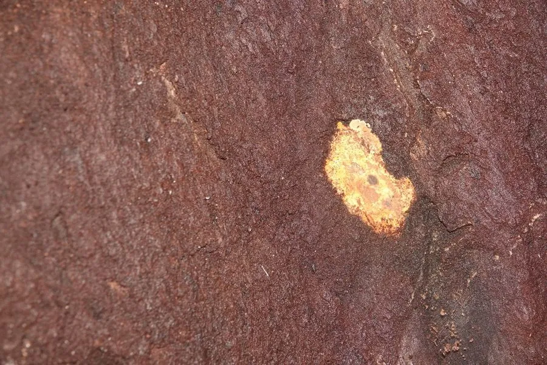

真菌 · 真菌界
樟芝 Antrodia camphorata

樟芝是台湾特有种真菌，只生长在牛樟树腐朽的树干内壁，数量稀少，被认为有保肝等药用价值，价格昂贵。
- 分类
- 门担子菌门纲伞菌纲目多孔菌目科拟层孔菌科属薄孔菌属
- 栖息环境
- 台湾牛樟树腐朽中空的树干内壁，生长极慢
- 地理分布
- 中国台湾特有种，仅产于台湾山区
- 保护级别
- 暂无评估；野生资源稀少，受保护与采挖管制
物种志
樟芝是担子菌门多孔菌目的木腐真菌，子实体多年生，形态多变，有板状、钟状、马蹄形或塔状，表面橙红至棕褐色，有菌孔，质地坚硬。它与牛樟树关系密切，野生樟芝只生长在台湾特有的牛樟树腐朽中空树干的内壁，生长极慢，数年才能长成小块。
樟芝是台湾特有种，野生资源极其稀少，已被列为保护对象。因民间认为其有保肝、解酒、提高免疫力等功效，樟芝在台湾被视为珍贵药材，价格高昂，也因此引发过度盗采，野生牛樟树和樟芝都受到严重威胁。目前人们通过固体培养、液体发酵和人工椴木栽培等方式生产樟芝，以缓解野生资源压力。需要说明的是，樟芝的保健功效仍在研究中，不能替代正规药物。
形态与习性
- 子实体板状、钟状或马蹄形
- 表面橙红至棕褐色，有菌孔
- 宿主牛樟树腐朽树干内壁
- 生长极慢，数年才长成小块
- 用途保健与药用研究
- 现状野生稀少，以人工培养为主
趣味知识
- 野生樟芝只长在台湾特有的牛樟树腐朽树干里。
- 樟芝生长极慢，野生资源稀少，价格非常昂贵。
- 现在多通过液体发酵和椴木栽培生产樟芝，以减少对野生的采挖。